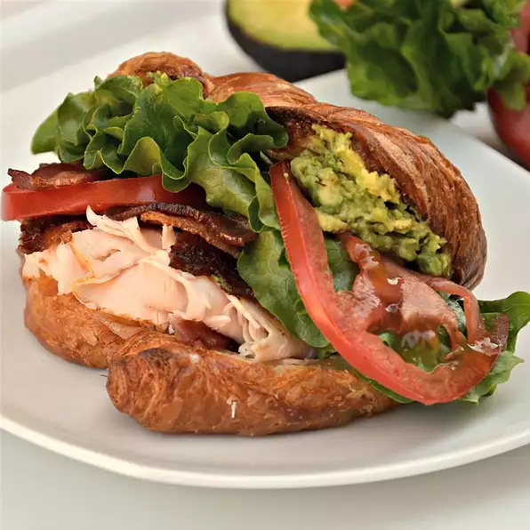

B.L.A.T club sandwich Recipe

Description
Delicious healthy club sandwich recipe
Ingredients
- 2 avocados, peeled and pitted
- ½ teaspoon garlic salt
- ½ teaspoon lemon juice /li>
- ¼ teaspoon dried oregano /li>
- 4 croissants, split
- 8 slices smoked deli turkey breast
- 4 slices Swiss cheese
- 8 slices cooked bacon
- 8 slices tomato
- 4 lettuce leaves
- 4 teaspoons spicy brown mustard, or to taste
Steps
- Preheat oven to 350 degrees F (175 degrees C).
- Mash avocado in a bowl using a fork or potato masher. Stir garlic salt, lemon juice, and oregano into mashed avocado.
- Arrange split croissants on a work surface. Place 2 slices turkey on bottom half of each croissant. Layer 1 slice Swiss cheese and 2 bacon slices atop each turkey layer. Place each croissant top over bacon layer. Arrange sandwiches on a baking sheet.
- Bake in the preheated oven until cheese is melted, 5 to 7 minutes.
- Open each sandwich and place 2 tomato slices and 1 lettuce leaf atop bacon layer. Lightly spread 1 teaspoon mustard and 1/4 the avocado mixture onto each croissant top. Return each top to each sandwich.